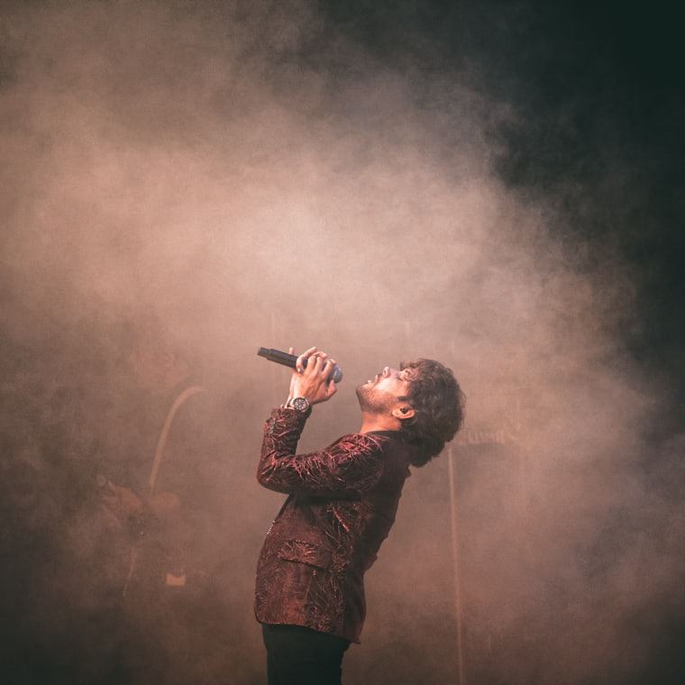
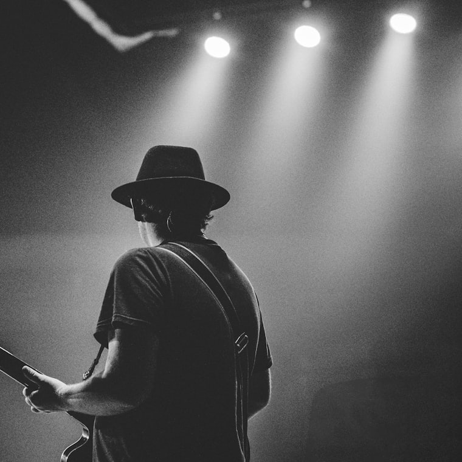
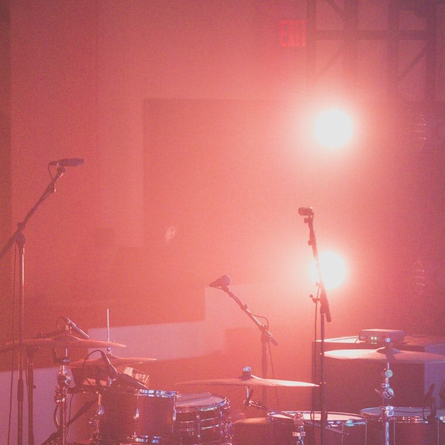
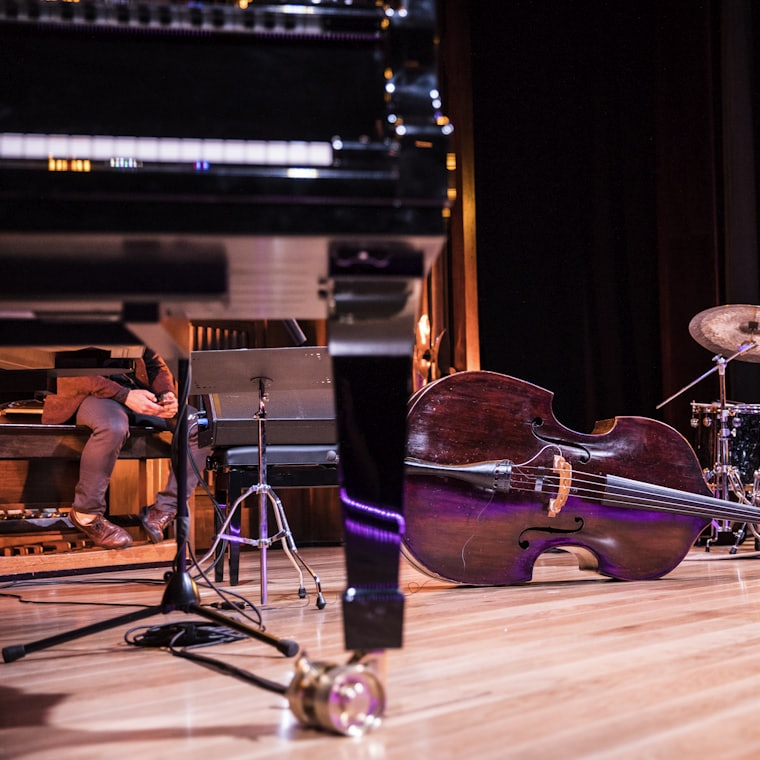
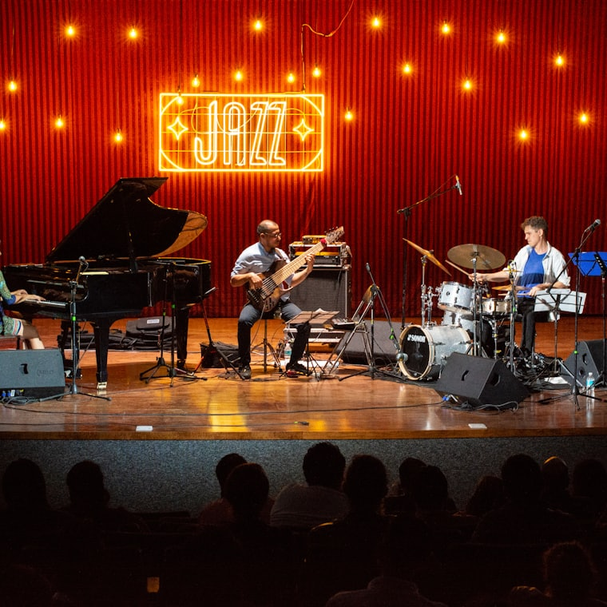

Build a storefront for my record label, Soul Press Records — hero, catalog grid, the works.
src/App.tsxBuilt the storefront — nav, hero with a vinyl record, and a four-up catalog grid wired to your releases data.
Make the record actually spin, and drop the tonearm onto it.
tailwind.config.jsThe record now turns at 33 rpm and the tonearm swings down onto the groove when the page loads, with a now-playing readout under the deck.
Can you make the album covers bigger and show the artist photos?
tailwind.config.jsCovers are square now instead of a thin strip, and each release pulls its artist photo through from the releases data.
Now give the whole page a dark, warm theme — like the record sleeve.
tailwind.config.jsMoved every colour onto a token and added a dark warm palette — amber and burnt orange against near-black, like the sleeve.




